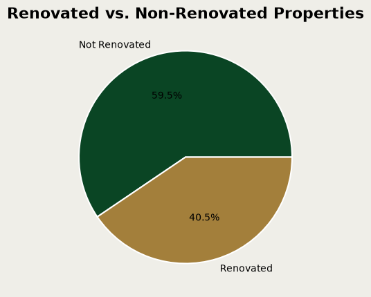
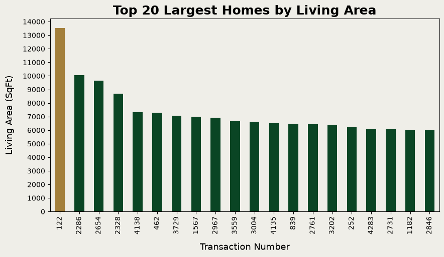
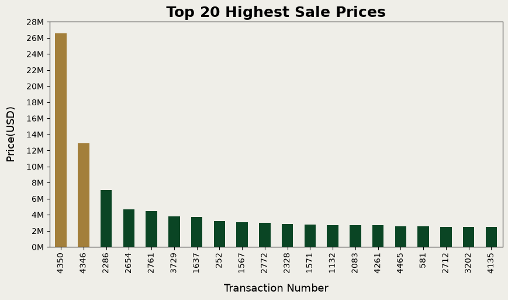
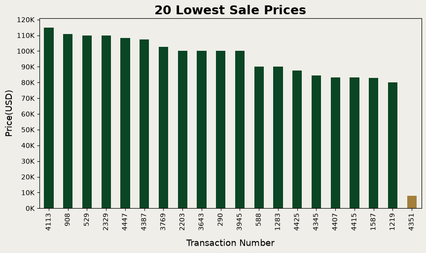
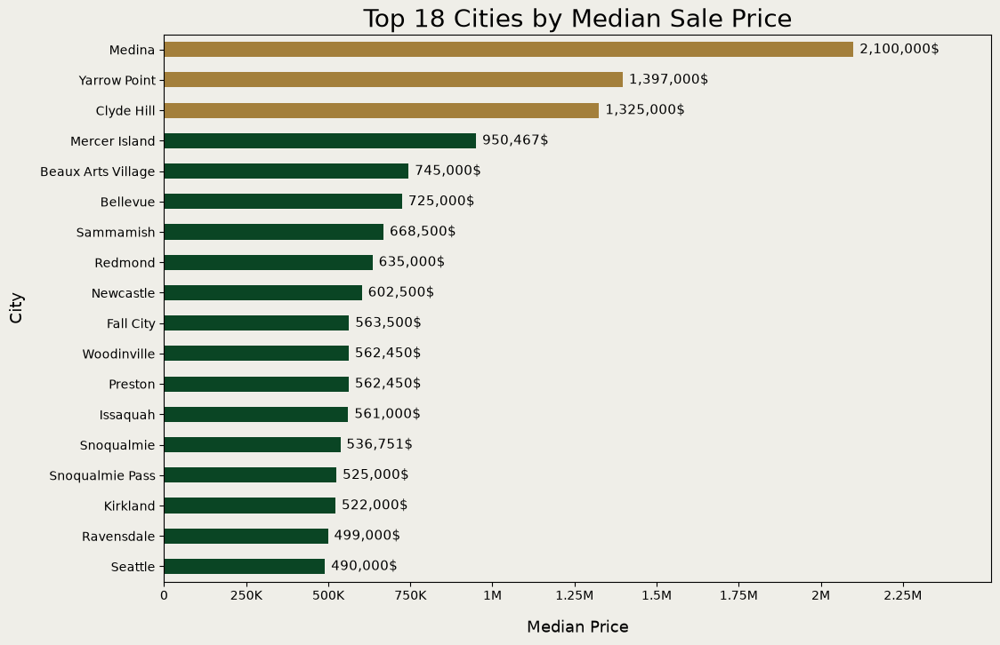
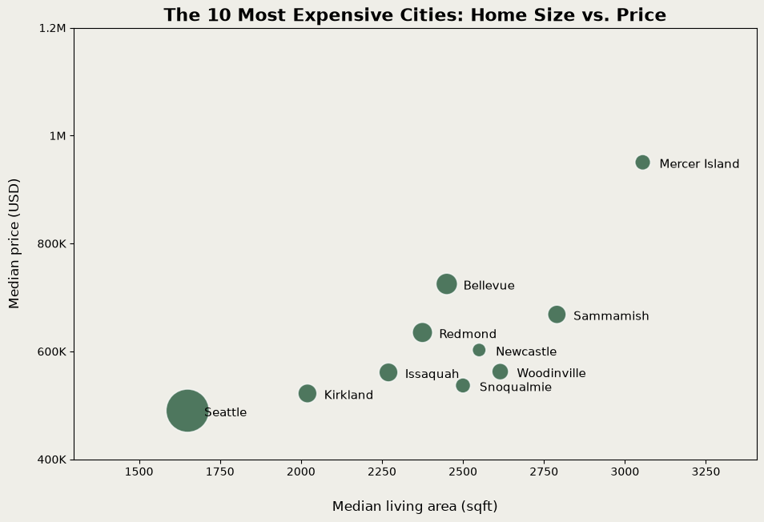
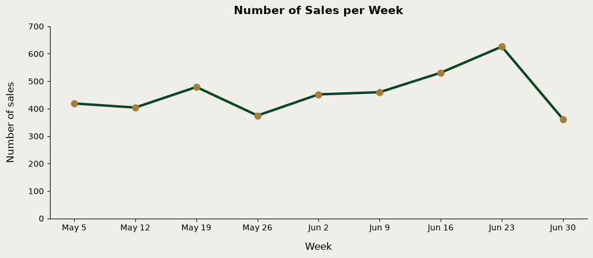
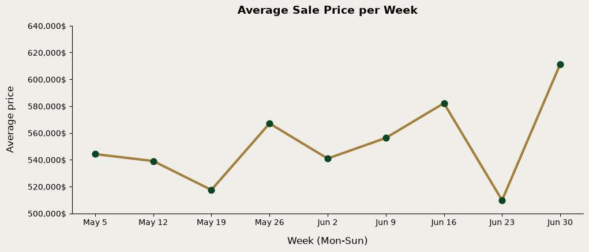
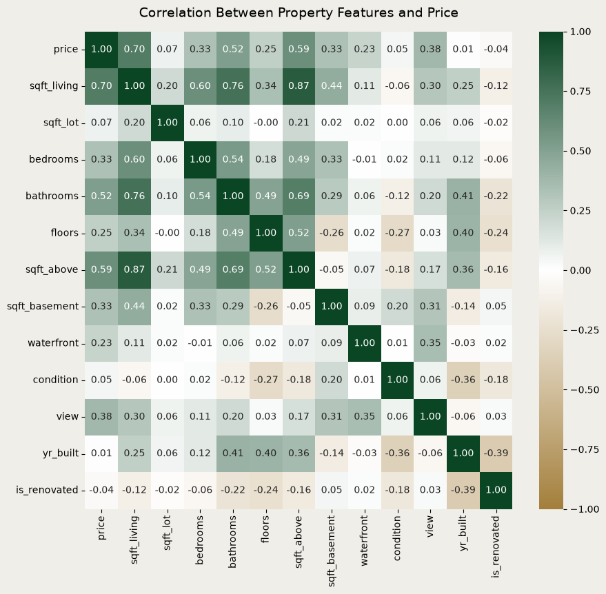
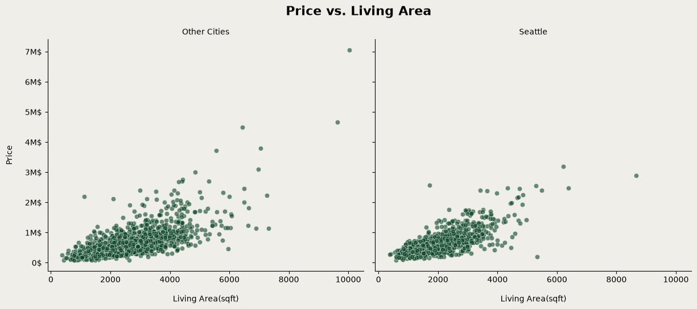

This project analyzes home sales in King County, Washington (USA), recorded between May 2 and July 10, 2014. For each sale, the dataset includes the price, the size and condition of the home, its view, and the city where it was sold.
Research question
Which physical and location features are most strongly related to home prices in King County?
Libraries
- pandas – loads the data and handles cleaning, filtering and grouping.
- matplotlib – the base library for drawing charts (titles, axes, colors).
- seaborn – built on top of matplotlib; creates statistical charts such as the correlation heatmap and the line and scatter plots with less code.
import pandas as pd import matplotlib.pyplot as plt import seaborn as sb
# Cosmetic only: cream background for all charts plt.rcParams['figure.facecolor'] = '#efeee8' plt.rcParams['axes.facecolor'] = '#efeee8'
df=pd.read_csv("house_sales.csv")
df.head()
| date | price | bedrooms | bathrooms | sqft_living | sqft_lot | floors | waterfront | view | condition | sqft_above | sqft_basement | yr_built | yr_renovated | street | city | statezip | price_per_sqft | |
|---|---|---|---|---|---|---|---|---|---|---|---|---|---|---|---|---|---|---|
| 0 | 2014-05-02 | 313000.0 | 3.0 | 1.50 | 1340 | 7912 | 1.5 | 0 | 0 | 3 | 1340 | 0 | 1955 | 2005 | 18810 Densmore Ave N | Shoreline | WA 98133 | 233.58 |
| 1 | 2014-05-02 | 2384000.0 | 5.0 | 2.50 | 3650 | 9050 | 2.0 | 0 | 4 | 5 | 3370 | 280 | 1921 | 0 | 709 W Blaine St | Seattle | WA 98119 | 653.15 |
| 2 | 2014-05-02 | 342000.0 | 3.0 | 2.00 | 1930 | 11947 | 1.0 | 0 | 0 | 4 | 1930 | 0 | 1966 | 0 | 26206-26214 143rd Ave SE | Kent | WA 98042 | 177.20 |
| 3 | 2014-05-02 | 420000.0 | 3.0 | 2.25 | 2000 | 8030 | 1.0 | 0 | 0 | 4 | 1000 | 1000 | 1963 | 0 | 857 170th Pl NE | Bellevue | WA 98008 | 210.00 |
| 4 | 2014-05-02 | 550000.0 | 4.0 | 2.50 | 1940 | 10500 | 1.0 | 0 | 0 | 4 | 1140 | 800 | 1976 | 1992 | 9105 170th Ave NE | Redmond | WA 98052 | 283.51 |
Dataset Features
- Date – Date of sale.
- Price – Sale price in USD.
- Bedrooms – Number of bedrooms.
- Bathrooms – Number of bathrooms, counted by fixtures: 1.0 = full bathroom (toilet, sink, shower, bathtub), 0.75 = toilet, sink and shower, 0.5 = toilet and sink, 0.25 = a single fixture. For example, 2.5 means two full bathrooms plus one half bathroom.
- Sqft_living – Interior living area in square feet.
- Sqft_lot – Lot (land) area in square feet.
- Floors – Number of floors; 1.5 means one full floor plus a partial upper floor, such as an attic.
- Waterfront – 1 if the home is on the waterfront, otherwise 0.
- View – View quality, rated from 0 (no view) to 4 (excellent view).
- Condition – Overall condition, rated from 1 (poor) to 5 (very good). A rating of 3 is average or Standard new build.
- Sqft_above – Living area above ground, excluding the basement.
- Sqft_basement – Basement area.
- Yr_built – Year the home was built.
- Yr_renovated – Year of the last renovation (0 = never renovated).
- Street, City, Statezip – Street address, city and ZIP code.
- Price_per_sqft – Price per square foot of living area.
Data Overview
The dataset contains 4,600 sales and 18 columns. Below I check the data types, missing values and duplicate rows.
df.info()
<class 'pandas.DataFrame'> RangeIndex: 4600 entries, 0 to 4599 Data columns (total 18 columns): # Column Non-Null Count Dtype --- ------ -------------- ----- 0 date 4600 non-null str 1 price 4600 non-null float64 2 bedrooms 4600 non-null float64 3 bathrooms 4600 non-null float64 4 sqft_living 4600 non-null int64 5 sqft_lot 4600 non-null int64 6 floors 4600 non-null float64 7 waterfront 4600 non-null int64 8 view 4600 non-null int64 9 condition 4600 non-null int64 10 sqft_above 4600 non-null int64 11 sqft_basement 4600 non-null int64 12 yr_built 4600 non-null int64 13 yr_renovated 4600 non-null int64 14 street 4600 non-null str 15 city 4600 non-null str 16 statezip 4600 non-null str 17 price_per_sqft 4600 non-null float64 dtypes: float64(5), int64(9), str(4) memory usage: 647.0 KB
df.describe()
| price | bedrooms | bathrooms | sqft_living | sqft_lot | floors | waterfront | view | condition | sqft_above | sqft_basement | yr_built | yr_renovated | price_per_sqft | |
|---|---|---|---|---|---|---|---|---|---|---|---|---|---|---|
| count | 4.600000e+03 | 4600.000000 | 4600.000000 | 4600.000000 | 4.600000e+03 | 4600.000000 | 4600.000000 | 4600.000000 | 4600.000000 | 4600.000000 | 4600.000000 | 4600.000000 | 4600.000000 | 4600.000000 |
| mean | 5.519630e+05 | 3.400870 | 2.160815 | 2139.346957 | 1.485252e+04 | 1.512065 | 0.007174 | 0.240652 | 3.451739 | 1827.265435 | 312.081522 | 1970.786304 | 808.608261 | 265.876209 |
| std | 5.638347e+05 | 0.908848 | 0.783781 | 963.206916 | 3.588444e+04 | 0.538288 | 0.084404 | 0.778405 | 0.677230 | 862.168977 | 464.137228 | 29.731848 | 979.414536 | 357.503362 |
| min | 0.000000e+00 | 0.000000 | 0.000000 | 370.000000 | 6.380000e+02 | 1.000000 | 0.000000 | 0.000000 | 1.000000 | 370.000000 | 0.000000 | 1900.000000 | 0.000000 | 0.000000 |
| 25% | 3.228750e+05 | 3.000000 | 1.750000 | 1460.000000 | 5.000750e+03 | 1.000000 | 0.000000 | 0.000000 | 3.000000 | 1190.000000 | 0.000000 | 1951.000000 | 0.000000 | 180.817500 |
| 50% | 4.609435e+05 | 3.000000 | 2.250000 | 1980.000000 | 7.683000e+03 | 1.500000 | 0.000000 | 0.000000 | 3.000000 | 1590.000000 | 0.000000 | 1976.000000 | 0.000000 | 243.855000 |
| 75% | 6.549625e+05 | 4.000000 | 2.500000 | 2620.000000 | 1.100125e+04 | 2.000000 | 0.000000 | 0.000000 | 4.000000 | 2300.000000 | 610.000000 | 1997.000000 | 1999.000000 | 314.840000 |
| max | 2.659000e+07 | 9.000000 | 8.000000 | 13540.000000 | 1.074218e+06 | 3.500000 | 1.000000 | 4.000000 | 5.000000 | 9410.000000 | 4820.000000 | 2014.000000 | 2014.000000 | 22533.900000 |
df.describe(include=['str'])
| date | street | city | statezip | |
|---|---|---|---|---|
| count | 4600 | 4600 | 4600 | 4600 |
| unique | 70 | 4525 | 44 | 77 |
| top | 2014-06-23 | 2520 Mulberry Walk NE | Seattle | WA 98103 |
| freq | 142 | 4 | 1573 | 148 |
#Checking for missing values. df.isnull().sum()
date 0 price 0 bedrooms 0 bathrooms 0 sqft_living 0 sqft_lot 0 floors 0 waterfront 0 view 0 condition 0 sqft_above 0 sqft_basement 0 yr_built 0 yr_renovated 0 street 0 city 0 statezip 0 price_per_sqft 0 dtype: int64
#Checking for duplicate rows. df.duplicated().sum()
np.int64(0)
# Convert the sale date to a date type df["date"]=pd.to_datetime(df["date"]) # Readable labels for tables and charts (the numeric columns stay for the correlation analysis) df["waterfront_label"]=df["waterfront"].astype(str).replace({"0": "No", "1": "Yes"}) df["condition_label"]=df["condition"].astype(str).replace({"1": "Poor", "2": "Fair","3": "Average", "4": "Good","5": "Very Good"}) df["view_label"]=df["view"].astype(str).replace({"0": "No view", "1": "Fair","2": "Average", "3": "Good","4": "Excellent"})
Data Cleaning
Invalid prices
49 sales (about 1% of the data) have a price of $0, which is not a real sale price. Price is the variable I want to explain, so filling it with an average would add guesses instead of facts. I remove these rows.
zero_price=df.query("price==0") zero_price.head()
| date | price | bedrooms | bathrooms | sqft_living | sqft_lot | floors | waterfront | view | condition | ... | sqft_basement | yr_built | yr_renovated | street | city | statezip | price_per_sqft | waterfront_label | condition_label | view_label | |
|---|---|---|---|---|---|---|---|---|---|---|---|---|---|---|---|---|---|---|---|---|---|
| 4354 | 2014-05-05 | 0.0 | 3.0 | 1.75 | 1490 | 10125 | 1.0 | 0 | 0 | 4 | ... | 0 | 1962 | 0 | 3911 S 328th St | Federal Way | WA 98001 | 0.0 | No | Good | No view |
| 4356 | 2014-05-05 | 0.0 | 4.0 | 2.75 | 2600 | 5390 | 1.0 | 0 | 0 | 4 | ... | 1300 | 1960 | 2001 | 2120 31st Ave W | Seattle | WA 98199 | 0.0 | No | Good | No view |
| 4357 | 2014-05-05 | 0.0 | 6.0 | 2.75 | 3200 | 9200 | 1.0 | 0 | 2 | 4 | ... | 1600 | 1953 | 1983 | 12271 Marine View Dr SW | Burien | WA 98146 | 0.0 | No | Good | Average |
| 4358 | 2014-05-06 | 0.0 | 5.0 | 3.50 | 3480 | 36615 | 2.0 | 0 | 0 | 4 | ... | 990 | 1983 | 0 | 21809 SE 38th Pl | Issaquah | WA 98075 | 0.0 | No | Good | No view |
| 4361 | 2014-05-07 | 0.0 | 5.0 | 1.50 | 1500 | 7112 | 1.0 | 0 | 0 | 5 | ... | 740 | 1920 | 0 | 14901-14999 12th Ave SW | Burien | WA 98166 | 0.0 | No | Very Good | No view |
5 rows × 21 columns
len(zero_price)
49
df=df.drop(zero_price.index)
Homes with no bedrooms and no bathrooms
Two homes are listed with 0 bedrooms and 0 bathrooms, even though they are large (3,064 and 4,810 sq ft) and sold for over $1 million. This is most likely missing data, not real studios. I looked for similar homes to estimate the missing values, but found none (see below), so I removed both rows.
no_baths=df.query("bathrooms==0") no_baths
| date | price | bedrooms | bathrooms | sqft_living | sqft_lot | floors | waterfront | view | condition | ... | sqft_basement | yr_built | yr_renovated | street | city | statezip | price_per_sqft | waterfront_label | condition_label | view_label | |
|---|---|---|---|---|---|---|---|---|---|---|---|---|---|---|---|---|---|---|---|---|---|
| 2365 | 2014-06-12 | 1095000.0 | 0.0 | 0.0 | 3064 | 4764 | 3.5 | 0 | 2 | 3 | ... | 0 | 1990 | 2009 | 814 E Howe St | Seattle | WA 98102 | 357.38 | No | Average | Average |
| 3209 | 2014-06-24 | 1295648.0 | 0.0 | 0.0 | 4810 | 28008 | 2.0 | 0 | 0 | 3 | ... | 0 | 1990 | 2009 | 20418 NE 64th Pl | Redmond | WA 98053 | 269.37 | No | Average | No view |
2 rows × 21 columns
# Looking for similar homes (same size, floors and no waterfront) df.query("2900<sqft_living<3200 and floors==3.5 and waterfront_label=='No'")
| date | price | bedrooms | bathrooms | sqft_living | sqft_lot | floors | waterfront | view | condition | ... | sqft_basement | yr_built | yr_renovated | street | city | statezip | price_per_sqft | waterfront_label | condition_label | view_label | |
|---|---|---|---|---|---|---|---|---|---|---|---|---|---|---|---|---|---|---|---|---|---|
| 2365 | 2014-06-12 | 1095000.0 | 0.0 | 0.0 | 3064 | 4764 | 3.5 | 0 | 2 | 3 | ... | 0 | 1990 | 2009 | 814 E Howe St | Seattle | WA 98102 | 357.38 | No | Average | Average |
1 rows × 21 columns
#It can be observed that there are no comparable properties df.query("4500<sqft_living<5000 and floors==2 and waterfront_label=='No' and view_label=='No view' and 26000<sqft_lot<30000 ")
| date | price | bedrooms | bathrooms | sqft_living | sqft_lot | floors | waterfront | view | condition | ... | sqft_basement | yr_built | yr_renovated | street | city | statezip | price_per_sqft | waterfront_label | condition_label | view_label | |
|---|---|---|---|---|---|---|---|---|---|---|---|---|---|---|---|---|---|---|---|---|---|
| 3209 | 2014-06-24 | 1295648.0 | 0.0 | 0.0 | 4810 | 28008 | 2.0 | 0 | 0 | 3 | ... | 0 | 1990 | 2009 | 20418 NE 64th Pl | Redmond | WA 98053 | 269.37 | No | Average | No view |
1 rows × 21 columns
#Consequently, these two anomalous rows with invalid physical attributes are removed from the dataset to maintain data integrity. df=df.drop(no_baths.index)
Build year and renovation year
In some homes the renovation year is earlier than the year the home was built, which is impossible. All the values are valid years, so it looks like the two columns were swapped in these rows. I swapped them back instead of deleting the homes. This is an assumption, but it keeps the data and the prices of these homes.
# Rows where the renovation year is earlier than the build year df.query("yr_renovated > 0 and yr_renovated < yr_built")
| date | price | bedrooms | bathrooms | sqft_living | sqft_lot | floors | waterfront | view | condition | ... | sqft_basement | yr_built | yr_renovated | street | city | statezip | price_per_sqft | waterfront_label | condition_label | view_label | |
|---|---|---|---|---|---|---|---|---|---|---|---|---|---|---|---|---|---|---|---|---|---|
| 31 | 2014-05-02 | 499950.00 | 4.0 | 2.50 | 2860 | 3345 | 2.0 | 0 | 0 | 3 | ... | 670 | 2004 | 2003 | 20120 137th Ave NE | Woodinville | WA 98072 | 174.81 | No | Average | No view |
| 60 | 2014-05-02 | 555000.00 | 4.0 | 2.50 | 3310 | 6500 | 2.0 | 0 | 0 | 3 | ... | 0 | 2012 | 1912 | 35229 SE Terrace St | Snoqualmie | WA 98065 | 167.67 | No | Average | No view |
| 61 | 2014-05-02 | 459990.00 | 3.0 | 2.50 | 2680 | 5539 | 2.0 | 0 | 0 | 3 | ... | 0 | 2013 | 1923 | 13800 453rd Ave SE | North Bend | WA 98045 | 171.64 | No | Average | No view |
| 64 | 2014-05-03 | 625000.00 | 4.0 | 2.75 | 2920 | 6605 | 2.0 | 0 | 0 | 3 | ... | 0 | 2012 | 1912 | 5608 NE 5th Cir | Renton | WA 98059 | 214.04 | No | Average | No view |
| 68 | 2014-05-04 | 775000.00 | 2.0 | 2.50 | 2680 | 7392 | 1.0 | 0 | 0 | 3 | ... | 0 | 2004 | 2003 | 13134 234th Ct NE | Redmond | WA 98053 | 289.18 | No | Average | No view |
| ... | ... | ... | ... | ... | ... | ... | ... | ... | ... | ... | ... | ... | ... | ... | ... | ... | ... | ... | ... | ... | ... |
| 4403 | 2014-05-19 | 646212.50 | 4.0 | 2.50 | 3430 | 64441 | 2.0 | 0 | 0 | 3 | ... | 0 | 2013 | 1923 | 19585-19799 204th Ave NE | Woodinville | WA 98077 | 188.40 | No | Average | No view |
| 4434 | 2014-05-29 | 484991.67 | 4.0 | 2.75 | 2320 | 4344 | 2.0 | 0 | 0 | 3 | ... | 0 | 2012 | 1912 | 4242 NE 2nd Ct | Renton | WA 98059 | 209.05 | No | Average | No view |
| 4441 | 2014-05-30 | 790000.00 | 4.0 | 2.50 | 2310 | 5100 | 2.0 | 0 | 0 | 3 | ... | 0 | 2013 | 1923 | 144 NW 103rd St | Seattle | WA 98177 | 341.99 | No | Average | No view |
| 4504 | 2014-06-17 | 331366.67 | 3.0 | 2.50 | 1270 | 2509 | 2.0 | 0 | 0 | 3 | ... | 0 | 2004 | 2003 | 2492 SW Webster St | Seattle | WA 98106 | 260.92 | No | Average | No view |
| 4593 | 2014-07-08 | 289373.31 | 3.0 | 2.50 | 2538 | 4600 | 2.0 | 0 | 0 | 3 | ... | 0 | 2013 | 1923 | 5703 Charlotte Ave SE | Auburn | WA 98092 | 114.02 | No | Average | No view |
193 rows × 21 columns
#Swap the two columns in these rows. mask=(df['yr_renovated']>0)&(df['yr_built']>df['yr_renovated']) df.loc[mask,['yr_built','yr_renovated']]=df.loc[mask,['yr_renovated','yr_built']].values
# Check: no impossible rows remain. df.query("yr_renovated > 0 and yr_renovated < yr_built")
| date | price | bedrooms | bathrooms | sqft_living | sqft_lot | floors | waterfront | view | condition | ... | sqft_basement | yr_built | yr_renovated | street | city | statezip | price_per_sqft | waterfront_label | condition_label | view_label |
|---|
0 rows × 21 columns
#I want to check how many properties were renovated compared to properties that were not renovated. renovated_count=((df['yr_renovated'] > 0).replace({True: 'Renovated', False: 'Not Renovated'}).value_counts()) plt.figure(figsize=(6, 5)) plt.pie(renovated_count,labels=renovated_count.index,autopct='%1.1f%%',colors=['#0a4524','#a37f3b'],wedgeprops={'edgecolor':'white','linewidth': 1.5}) plt.title('Renovated vs. Non-Renovated Properties',fontsize=16,weight='bold') plt.show()

#Checking for physical inconsistencies between the lot size and the living area. df.query("sqft_living > sqft_lot")
| date | price | bedrooms | bathrooms | sqft_living | sqft_lot | floors | waterfront | view | condition | ... | sqft_basement | yr_built | yr_renovated | street | city | statezip | price_per_sqft | waterfront_label | condition_label | view_label | |
|---|---|---|---|---|---|---|---|---|---|---|---|---|---|---|---|---|---|---|---|---|---|
| 22 | 2014-05-02 | 626000.00 | 3.0 | 2.25 | 1750 | 1572 | 2.5 | 0 | 0 | 3 | ... | 280 | 2005 | 0 | 3140 Franklin Ave E | Seattle | WA 98102 | 357.71 | No | Average | No view |
| 48 | 2014-05-02 | 445700.00 | 3.0 | 2.50 | 1270 | 1180 | 3.0 | 0 | 0 | 3 | ... | 0 | 2001 | 0 | 2640 NW 56th St | Seattle | WA 98107 | 350.94 | No | Average | No view |
| 59 | 2014-05-02 | 295000.00 | 2.0 | 2.50 | 1630 | 1368 | 2.0 | 0 | 0 | 3 | ... | 350 | 2009 | 0 | 5944-6082 Delridge Way SW | Seattle | WA 98106 | 180.98 | No | Average | No view |
| 75 | 2014-05-05 | 531000.00 | 2.0 | 3.00 | 1270 | 1175 | 2.0 | 0 | 0 | 3 | ... | 160 | 2000 | 0 | 1411 N 48th St | Seattle | WA 98103 | 418.11 | No | Average | No view |
| 88 | 2014-05-05 | 405000.00 | 2.0 | 3.00 | 1410 | 1240 | 2.0 | 0 | 0 | 3 | ... | 270 | 2006 | 0 | 9126 45th Ave SW | Seattle | WA 98136 | 287.23 | No | Average | No view |
| ... | ... | ... | ... | ... | ... | ... | ... | ... | ... | ... | ... | ... | ... | ... | ... | ... | ... | ... | ... | ... | ... |
| 4391 | 2014-05-15 | 274750.00 | 4.0 | 2.50 | 1840 | 1562 | 2.0 | 0 | 0 | 3 | ... | 440 | 2003 | 2004 | 2414 SW Holden St | Seattle | WA 98106 | 149.32 | No | Average | No view |
| 4465 | 2014-06-05 | 2560498.33 | 3.0 | 2.50 | 1710 | 1664 | 2.0 | 0 | 0 | 5 | ... | 410 | 2003 | 0 | 2826 21st Ave W | Seattle | WA 98199 | 1497.37 | No | Very Good | No view |
| 4543 | 2014-06-25 | 360500.00 | 3.0 | 2.50 | 1150 | 887 | 3.0 | 0 | 0 | 3 | ... | 0 | 2007 | 0 | 10703 Greenwood Ave N | Seattle | WA 98133 | 313.48 | No | Average | No view |
| 4573 | 2014-07-02 | 584000.00 | 3.0 | 1.75 | 1490 | 1036 | 2.0 | 0 | 0 | 3 | ... | 400 | 2008 | 0 | 4304B 36th Ave W | Seattle | WA 98199 | 391.95 | No | Average | No view |
| 4586 | 2014-07-07 | 430277.78 | 3.0 | 2.25 | 1620 | 1075 | 3.0 | 0 | 0 | 3 | ... | 80 | 2009 | 0 | 972 4th Ave NE | Issaquah | WA 98029 | 265.60 | No | Average | No view |
171 rows × 21 columns
Living area larger than the lot
171 homes have a living area that is larger than the lot. This is possible when a building has several floors on a small lot, as in townhouses and compact urban homes. To check this properly, I compared the lot size with the building footprint (above ground area divided by the number of floors). In all but one of these homes the footprint fits inside the lot. In the remaining home it exceeds the lot by only 18 sq ft (about 2%), which is within measurement error, so I kept all of them.
# Building footprint=above ground area divided by the number of floors df["footprint"]=df["sqft_above"]/df["floors"] df.query("footprint > sqft_lot")
| date | price | bedrooms | bathrooms | sqft_living | sqft_lot | floors | waterfront | view | condition | ... | yr_built | yr_renovated | street | city | statezip | price_per_sqft | waterfront_label | condition_label | view_label | footprint | |
|---|---|---|---|---|---|---|---|---|---|---|---|---|---|---|---|---|---|---|---|---|---|
| 4130 | 2014-07-08 | 530000.0 | 2.0 | 2.5 | 1785 | 779 | 2.0 | 0 | 0 | 3 | ... | 1975 | 0 | 1600-1718 107th Ave SE | Bellevue | WA 98004 | 296.92 | No | Average | No view | 797.5 |
1 rows × 22 columns
#Checking for out-of-range transaction dates to ensure temporal consistency. df.query("date < '2014-05-02' or date > '2014-07-10'")
| date | price | bedrooms | bathrooms | sqft_living | sqft_lot | floors | waterfront | view | condition | ... | yr_built | yr_renovated | street | city | statezip | price_per_sqft | waterfront_label | condition_label | view_label | footprint |
|---|
0 rows × 22 columns
#Inspected the smallest living area values to verify that extreme low-end figures represent valid small dwellings rather than data entry errors. df.sqft_living.nsmallest(20)
3778 370 2919 380 2416 420 1219 430 4184 490 4368 520 1216 550 1833 560 1283 580 1191 590 4338 590 2318 620 3444 620 4147 630 586 650 1906 650 3266 650 2770 660 3945 660 1861 670 Name: sqft_living, dtype: int64
df.sqft_living.nlargest(20)
122 13540 2286 10040 2654 9640 2328 8670 4138 7320 462 7270 3729 7050 1567 6980 2967 6900 3559 6640 3004 6630 4135 6500 839 6490 2761 6430 3202 6390 252 6210 4283 6070 2731 6050 1182 6040 2846 5990 Name: sqft_living, dtype: int64
l=df.sqft_living.nlargest(20) l.plot(kind="bar", color=["#a37f3b"]+["#0a4524"]*19,figsize=(10, 5)) plt.title("Top 20 Largest Homes by Living Area", fontsize=18, weight="bold") plt.xlabel("Transaction Number", fontsize=13,labelpad=12) plt.ylabel("Living Area (SqFt)", fontsize=13,labelpad=12) plt.yticks(range(0,15000, 1000)) plt.show() #It is evident that an extreme outlier exists in terms of living area, requiring removal to ensure an accurate representation of the dataset.

df = df.drop(index=122)
df.price.nlargest(20)
4350 26590000.00 4346 12899000.00 2286 7062500.00 2654 4668000.00 2761 4489000.00 3729 3800000.00 1637 3710000.00 252 3200000.00 1567 3100000.00 2772 3000000.00 2328 2888000.00 1571 2750000.00 1132 2700000.00 2083 2700000.00 4261 2680000.00 4465 2560498.33 581 2555000.00 2712 2475000.00 3202 2466350.00 4135 2458000.00 Name: price, dtype: float64
lp=df.price.nlargest(20)/1000000 lp.plot(kind='bar',figsize=(10, 5),color=["#a37f3b"]+["#a37f3b"]+["#0a4524"]*18) plt.title("Top 20 Highest Sale Prices",fontsize=18,weight="bold") plt.xlabel("Transaction Number",fontsize=13,labelpad=12) plt.ylabel("Price(USD)", fontsize=13,labelpad=12) plt.yticks(range(0,29,2),[f"{i}M" for i in range(0,29,2)]) plt.show()

df=df.drop(index=[4350, 4346]) #It can be seen that there are two extreme outlier transactions, so I am removing them in order to prevent them from skewing the statistical analysis.
df.price.nsmallest(20)
4351 7800.00 1219 80000.00 1587 83000.00 4407 83300.00 4415 83300.00 4345 84350.00 4425 87500.00 588 90000.00 1283 90000.00 290 100000.00 2203 100000.00 3643 100000.00 3945 100000.00 3769 102500.00 4387 107500.00 4447 108333.33 529 110000.00 2329 110000.00 908 110700.00 4113 115000.00 Name: price, dtype: float64
sp=df.price.nsmallest(20).sort_values(ascending=False)/1000 sp.plot(kind='bar',figsize=(10,5),color=["#0a4524"]*19+["#a37f3b"]) plt.title("20 Lowest Sale Prices", fontsize=18, weight="bold") plt.xlabel("Transaction Number", fontsize=13, labelpad=12) plt.ylabel("Price(USD)", fontsize=13) plt.yticks(range(0,130,10),[f"{i}K" for i in range(0,130,10)]) plt.show()

df=df.drop(index=4351) #It can be seen that there is an extremely low transaction, so I am removing it to prevent it from skewing the data analysis.
Extreme values
- Largest home: One home has 13,540 sq ft, about 35% more than the next largest (10,040 sq ft). The second one sold for 7.1 million USD, which fits a luxury home, so I kept it. I removed only the 13,540 sq ft home, because it would distort averages and scatter plots.
- Highest prices: Two sales (26.6 million USD and 12.9 million USD) are far above the next highest (7.1 million USD), and they may be genuine sales of extremely luxurious homes. They are so rare that they would distort the averages and charts, and this analysis focuses on typical homes, so I excluded them as outliers. This is an analytical choice, not a correction of errors.
- Lowest price: One sale at 7,800 USD is far below the next lowest (80,000 USD). It may not be a regular market sale (for example, a transfer between relatives), so I excluded it as an outlier.
In total, I removed 55 of 4,600 rows (1.2%).
After cleaning, 4,545 sales remain. Next, I look at the distribution of the main features.
# 4,470 different streets for 4,545 sales df["street"].nunique()
4470
# Street is too detailed to group by, and the city already gives the geographic level I need df=df.drop(columns=["street", "statezip"])
#Distribution of Bedrooms. df.groupby('bedrooms').bedrooms.count()
bedrooms 1.0 37 2.0 560 3.0 2023 4.0 1512 5.0 338 6.0 59 7.0 13 8.0 2 9.0 1 Name: bedrooms, dtype: int64
#Distribution of Bathrooms. df.groupby('bathrooms').bathrooms.count()
bathrooms 0.75 17 1.00 735 1.25 3 1.50 287 1.75 628 2.00 424 2.25 413 2.50 1183 2.75 270 3.00 164 3.25 135 3.50 159 3.75 34 4.00 21 4.25 22 4.50 26 4.75 7 5.00 5 5.25 4 5.50 4 5.75 1 6.25 1 6.50 1 6.75 1 Name: bathrooms, dtype: int64
#Distribution by floors. df.groupby('floors').floors.count()
floors 1.0 2148 1.5 439 2.0 1790 2.5 41 3.0 126 3.5 1 Name: floors, dtype: int64
#Distribution by waterfront access. df.groupby('waterfront_label').waterfront.count()
waterfront_label No 4515 Yes 30 Name: waterfront, dtype: int64
#View rating distribution. df.groupby('view_label').view.count().sort_values(ascending=False)
view_label No view 4099 Average 200 Good 115 Fair 69 Excellent 62 Name: view, dtype: int64
#Distribution by condition rating df.groupby('condition_label').condition.count().sort_values(ascending=False)
condition_label Average 2847 Good 1237 Very Good 425 Fair 31 Poor 5 Name: condition, dtype: int64
df.groupby('city')['price'].agg(['count','median']).sort_values('median',ascending=False)
| count | median | |
|---|---|---|
| city | ||
| Medina | 11 | 2100000.000 |
| Yarrow Point | 4 | 1397000.000 |
| Clyde Hill | 9 | 1325000.000 |
| Mercer Island | 82 | 950466.665 |
| Beaux Arts Village | 1 | 745000.000 |
| Bellevue | 281 | 725000.000 |
| Sammamish | 171 | 668500.000 |
| Redmond | 233 | 635000.000 |
| Newcastle | 33 | 602500.000 |
| Fall City | 11 | 563500.000 |
| Preston | 2 | 562450.000 |
| Woodinville | 114 | 562450.000 |
| Issaquah | 186 | 561000.000 |
| Snoqualmie | 69 | 536751.000 |
| Snoqualmie Pass | 1 | 525000.000 |
| Kirkland | 187 | 522000.000 |
| Ravensdale | 7 | 499000.000 |
| Seattle | 1559 | 490000.000 |
| Bothell | 33 | 458000.000 |
| Lake Forest Park | 34 | 455000.000 |
| Normandy Park | 17 | 455000.000 |
| Vashon | 29 | 445000.000 |
| Kenmore | 65 | 438000.000 |
| Carnation | 22 | 432175.000 |
| Inglewood-Finn Hill | 1 | 425000.000 |
| Duvall | 42 | 402750.000 |
| North Bend | 50 | 394250.000 |
| Shoreline | 123 | 360000.000 |
| Renton | 291 | 345000.000 |
| Black Diamond | 8 | 326500.000 |
| Maple Valley | 95 | 321000.000 |
| Enumclaw | 27 | 289000.000 |
| Burien | 72 | 287475.000 |
| Milton | 2 | 285000.000 |
| Kent | 183 | 283200.000 |
| Auburn | 175 | 276000.000 |
| Federal Way | 145 | 264950.000 |
| Tukwila | 28 | 263500.000 |
| Des Moines | 58 | 256975.000 |
| Covington | 42 | 249700.000 |
| SeaTac | 28 | 238500.000 |
| Algona | 5 | 230000.000 |
| Pacific | 6 | 221200.000 |
| Skykomish | 3 | 150000.000 |
avg_p=df.groupby('city')['price'].median().sort_values(ascending=True).tail(18) z=avg_p.plot(kind="barh",figsize=(12,8),color=["#0a4524"]*15+["#a37f3b"]+["#a37f3b"]+["#a37f3b"]) plt.title('Top 18 Cities by Median Sale Price', fontsize=20) plt.xlabel('Median Price', fontsize=13, labelpad=14) plt.ylabel('City', fontsize=13, labelpad=12) plt.xticks([0,250000,500000,750000,1000000,1250000,1500000,1750000,2000000,2250000], ['0','250K','500K','750K','1M','1.25M','1.5M','1.75M','2M','2.25M']) plt.xlim(0, avg_p.max() * 1.2) for c in z.containers: z.bar_label(c, fmt="{:,.0f}$", padding=5, fontsize=11) plt.show()

Seattle is the largest market, but not the most expensive. It accounts for 34% of all sales (1,559 of 4,545 homes), yet its median price (490,000 USD) ranks only 18th among the 44 cities.
The chart shows the 18 cities with the highest median sale price. The four most expensive are small, wealthy communities around Lake Washington: Medina, Yarrow Point, Clyde Hill and Mercer Island. Medina, for example, has only 11 sales, but its median price is 2,100,000 USD, about 4.3 times higher than Seattle's. The larger Eastside cities follow: Bellevue (725,000 USD, 281 sales), Sammamish (668,500 USD) and Redmond (635,000 USD).
Some cities in the chart have very few sales: Beaux Arts Village (1 sale), Preston (2 sales) and Yarrow Point (4 sales). Their medians are based on a handful of homes and are less reliable.
Size matters, and location adds to it
Goal of the chart: the earlier charts showed that the most expensive cities are small and wealthy. The question now is whether these cities are expensive simply because their homes are bigger, or because of the location itself. To check this, I place each of the 10 most expensive cities on one chart: home size on the horizontal axis and price on the vertical axis.
The median and not the average: each city has a few very expensive homes, and in small cities one luxury sale can pull the average up a lot. The median (the middle value) is not affected by these extremes, so it describes the typical home in the city. I use the median for both price and size, so that both axes describe the typical home.
At least 20 sales: a median based on only a few homes is not reliable, so I include only cities with 20 or more sales. The bubble size shows the number of sales in each city.
expensive_cities=df.groupby("city").agg(sales_count=("price","count"), median_price=("price","median"), median_sqft=("sqft_living","median")) expensive_cities=expensive_cities.query("sales_count >= 20") expensive_cities=expensive_cities.sort_values("median_price",ascending=False).head(10) expensive_cities
| sales_count | median_price | median_sqft | |
|---|---|---|---|
| city | |||
| Mercer Island | 82 | 950466.665 | 3055.0 |
| Bellevue | 281 | 725000.000 | 2450.0 |
| Sammamish | 171 | 668500.000 | 2790.0 |
| Redmond | 233 | 635000.000 | 2375.0 |
| Newcastle | 33 | 602500.000 | 2550.0 |
| Woodinville | 114 | 562450.000 | 2615.0 |
| Issaquah | 186 | 561000.000 | 2270.0 |
| Snoqualmie | 69 | 536751.000 | 2500.0 |
| Kirkland | 187 | 522000.000 | 2020.0 |
| Seattle | 1559 | 490000.000 | 1650.0 |
# Each bubble is a city, bigger bubble=more sales plt.figure(figsize=(11,7)) sb.scatterplot(data=expensive_cities, x="median_sqft", y="median_price", size="sales_count", sizes=(150,1500),color="#0a4524",alpha=0.7,legend=False) plt.title("The 10 Most Expensive Cities: Home Size vs. Price",fontsize=16,weight="bold") plt.xlabel("Median living area (sqft)",fontsize=12,labelpad=20) plt.ylabel("Median price (USD)",fontsize=12,labelpad=14) plt.yticks([400000, 600000, 800000, 1000000, 1200000], ["400K", "600K", "800K", "1M", "1.2M"]) for city, row in expensive_cities.iterrows(): plt.annotate(city,(row["median_sqft"],row["median_price"]), textcoords="offset points", xytext=(15,-5), fontsize=11) plt.margins(x=0.25) plt.show()

Conclusion: size matters, and location adds to it. Among the 10 most expensive cities, price does not simply follow home size. Cities with similar median living areas can have very different median prices, so part of the premium comes from the location and not only from the square footage. The bubble size also shows that these expensive cities are small markets: most of them have far fewer sales than Seattle, so a few luxury sales can strongly affect their numbers. This is why I use the median and only include cities with at least 20 sales. It supports the main finding of the project: living area is the strongest single factor related to price, and location adds to it.
Age of the homes
#Number of homes per year from 1900 to 1910, is 1900 far above the nearby years? df["yr_built"].value_counts().sort_index().head(11)
yr_built 1900 22 1901 9 1902 10 1903 10 1904 9 1905 19 1906 27 1907 12 1908 19 1909 22 1910 32 Name: count, dtype: int64
# Compare the age of homes in Seattle with all other cities df["city_group"]=df["city"].apply(lambda x: "Seattle" if x == "Seattle" else "Other Cities") df["is_old"]=df["yr_built"] < 1950 df["is_new"]= df["yr_built"] == 2014 age=df.groupby("city_group")[["is_old", "is_new"]].mean()*100 age.columns=["Old homes(built before 1950)-PCT","New homes(built in 2014)-PCT"] age.round(1)
| Old homes(built before 1950)-PCT | New homes(built in 2014)-PCT | |
|---|---|---|
| city_group | ||
| Other Cities | 8.8 | 1.7 |
| Seattle | 58.1 | 1.7 |
#How many of the homes are new, and what is their condition? new_homes=df.query("yr_built==2014") new_homes["condition"].value_counts()
condition 3 78 Name: count, dtype: int64
#How many percent of new homes are built without a basement floor? (new_homes["sqft_basement"] == 0).mean()*100
np.float64(80.76923076923077)
#Which cities have new construction? new_homes["city"].value_counts()
city Seattle 27 Issaquah 10 Auburn 8 Kirkland 5 Renton 5 Redmond 4 Sammamish 4 Maple Valley 3 Snoqualmie 2 Shoreline 1 Federal Way 1 Des Moines 1 Bothell 1 Bellevue 1 Burien 1 Black Diamond 1 North Bend 1 Enumclaw 1 Mercer Island 1 Name: count, dtype: int64
#Summary statistics of the 78 homes built in 2014 (all sold between May and July 2014) new_homes.describe(percentiles=[0.1, 0.2, 0.5, 0.8, 0.9])[["price","sqft_lot","floors","bathrooms","sqft_basement"]]
| price | sqft_lot | floors | bathrooms | sqft_basement | |
|---|---|---|---|---|---|
| count | 7.800000e+01 | 78.000000 | 78.000000 | 78.000000 | 78.000000 |
| mean | 6.076452e+05 | 4798.205128 | 2.115385 | 2.621795 | 115.512821 |
| min | 2.240000e+05 | 638.000000 | 1.000000 | 1.250000 | 0.000000 |
| 10% | 3.228301e+05 | 1247.800000 | 2.000000 | 1.750000 | 0.000000 |
| 20% | 3.540738e+05 | 1615.000000 | 2.000000 | 2.500000 | 0.000000 |
| 50% | 5.415125e+05 | 4294.000000 | 2.000000 | 2.500000 | 0.000000 |
| 80% | 8.243294e+05 | 6464.200000 | 2.000000 | 3.000000 | 0.000000 |
| 90% | 9.726930e+05 | 8416.400000 | 3.000000 | 3.500000 | 546.000000 |
| max | 2.351956e+06 | 21195.000000 | 3.000000 | 4.250000 | 1010.000000 |
| std | 3.131275e+05 | 3664.765793 | 0.394138 | 0.555000 | 264.362244 |
Homes were built between 1900 and 2014. A quarter were built before 1951, and a quarter after 1997. A few notes: - New construction: 78 homes were built in 2014. Compared with all homes, they sit on much smaller lots (about 4,800 vs. 14,800 sqft on average), have more floors (2.1 vs. 1.5) and more bathrooms (2.6 vs. 2.2). About 90% of them sold for less than 1 million USD (median: about 540,000 USD). - Basement and location: About 81% of the new homes have no basement. They were sold in 19 cities, mostly in Seattle (27 of the 78 homes), Issaquah (10) and Auburn (8). - Condition ratings: All 78 new homes are rated 3-average. The rating describes the condition relative to the home's age, so a 3 for a new home is not the same as a 3 for a 100-year-old home. This may explain why condition shows almost no correlation with price later in the analysis. - Seattle: 58.1% of the homes in Seattle were built before 1950, compared with only 8.8% in the other cities. The share of new homes (built in 2014) is the same in both groups, 1.7%. Seattle is much older, which fits a city that grew early. I define an old home as one built before 1950, which is close to the oldest quarter of all homes in the data. - Year 1900: 22 homes were built in 1900. This is similar to the nearby years (between 9 and 32 homes per year from 1901 to 1910), so 1900 does not look like a default value for an unknown year, and I keep these homes in the analysis.
Key Findings from the Exploration
Home characteristics
- Bedrooms: Most homes have 3 bedrooms (45%) or 4 bedrooms (33%).
- Bathrooms: The most common value is 2.5 bathrooms (26% of homes): two full bathrooms plus a half bathroom.
- Floors: Single-story homes are the most common (47%), followed by two-story homes (39%).
Views and condition
- Waterfront: Only 30 homes (0.7%) are on the waterfront.
- View: 90% of the homes have no view, and only 62 homes (1.4%) have an excellent view.
- Condition: Most homes are in average condition (63%), 27% are in good condition, and only 5 homes are in poor condition.
Location
- Seattle is the largest market with 1,559 sales (34%), more than five times the second city, Renton (291 sales). Bellevue is third (281 sales).
- Prices differ strongly between cities. The most expensive cities are small and wealthy, not the biggest ones.
Age of the homes
- A quarter of the homes were built before 1951 and a quarter after 1997.
- 78 homes are new construction (built in 2014). They tend to have small lots and more floors, and about 81% have no basement.
Weekly Trends
To see how the market changed over time, I grouped the sales by week and calculated, for each week, the number of sales and the average price. The first week (starting Friday, May 2) and the last week (ending Thursday, July 10) are incomplete, so I excluded them. This leaves 9 full weeks.
# Create a column with the week number df["week"]=df["date"].dt.isocalendar().week # Group the sales by week week_table=(df.groupby("week").agg(sales=("price","count"), avg_price=("price", "mean"), median_price=("price", "median")).reset_index()) # Drop the first and last weeks, which are incomplete week_table=week_table.iloc[1:-1].copy() # Label each week with the date of its Monday week_mapping = {19:"May 5",20:"May 12",21:"May 19",22:"May 26",23:"Jun 2",24:"Jun 9",25:"Jun 16",26:"Jun 23",27:"Jun 30"} week_table["week_label"]=week_table["week"].map(week_mapping) week_table
| week | sales | avg_price | median_price | week_label | |
|---|---|---|---|---|---|
| 1 | 19 | 419 | 544214.348115 | 483500.0 | May 5 |
| 2 | 20 | 404 | 539053.243119 | 475000.0 | May 12 |
| 3 | 21 | 479 | 517484.534990 | 440000.0 | May 19 |
| 4 | 22 | 375 | 567110.679893 | 465000.0 | May 26 |
| 5 | 23 | 452 | 540897.455752 | 470500.0 | Jun 2 |
| 6 | 24 | 460 | 556247.728826 | 475000.0 | Jun 9 |
| 7 | 25 | 531 | 582193.979228 | 473000.0 | Jun 16 |
| 8 | 26 | 626 | 509783.719904 | 428450.0 | Jun 23 |
| 9 | 27 | 362 | 611354.195414 | 499495.0 | Jun 30 |
# Correlation between the number of sales, the average price and the median price. week_table[["sales","avg_price","median_price"]].corr()
| sales | avg_price | median_price | |
|---|---|---|---|
| sales | 1.000000 | -0.549638 | -0.746274 |
| avg_price | -0.549638 | 1.000000 | 0.806792 |
| median_price | -0.746274 | 0.806792 | 1.000000 |
The correlation shows that weeks with more sales tended to have lower prices. To see which weeks drive this pattern, I plotted both measures over time: the first chart shows the number of sales per week, and the second shows the average sale price per week.
g1=sb.relplot(data=week_table,x="week_label",y="sales",kind="line",height=4,aspect=2.5 ,linewidth=3,marker='o',markersize=8,mfc="#a37f3b",mec="#a37f3b",color="#0a4524") plt.title("Number of Sales per Week", fontsize=14, pad=15, weight='bold') plt.xlabel("Week", labelpad=12, fontsize=12) plt.ylabel("Number of sales", labelpad=15, fontsize=12) plt.yticks(range(0,800,100)) plt.show() g2=sb.relplot(data=week_table,x="week_label",y="avg_price",kind="line",height=4,aspect=2.5 ,linewidth=3,marker='o',markersize=8,mfc="#0a4524",mec="#0a4524",color="#a37f3b") plt.title('Average Sale Price per Week', fontsize=14, pad=15, weight='bold') plt.xlabel("Week (Mon-Sun)", labelpad=12, fontsize=12) plt.ylabel("Average price", labelpad=15, fontsize=12) plt.yticks([500000,520000,540000,560000,580000,600000,620000,640000], ['500,000$','520,000$','540,000$','560,000$','580,000$','600,000$','620,000$','640,000$']) plt.show()


The correlation between the weekly number of sales and the weekly average price is -0.55, and the correlation with the weekly median price is -0.75. Both are negative: in weeks with more sales, prices tended to be lower. The relationship with the median is even stronger, so this is not just a few luxury sales distorting the average: the typical home sold in a busy week was cheaper. With only 9 full weeks, this is a rough indication, not proof.
What the charts show - The busiest week was June 23–29 (the point labelled "Jun 23" on the charts), with 626 sales. In that week the average price was the lowest of the period (about 510,000 USD). - The following week (June 30–July 6, the last point on the charts, labelled "Jun 30") had the fewest sales of all full weeks (362) and the highest average price (about 611,000 USD). - A possible explanation is the mix of homes. In busy weeks more lower-priced homes are sold, which lowers both the median and the average. In quiet weeks, more expensive homes make up a larger share of the sales.
The weekly changes in average price therefore likely reflect which homes happened to be sold that week, rather than a real change in home values.
What Drives Price?
Correlation between features and price
The correlation coefficient measures how strongly two variables move together, from -1 to 1. A value close to 1 means that when the feature grows, the price tends to grow too. A value close to 0 means there is almost no linear relationship. The heatmap shows all pairs of features.
- Living area is the strongest feature (0.70). On its own it explains about half of the differences in price.
- Above-ground area (0.59) and bathrooms (0.52) come next. They overlap with living area, since bigger homes usually have more bathrooms and a larger above-ground area, so they are not independent factors.
- View quality (0.38) has a moderate relationship with price, while basement area (0.33) and bedrooms (0.33) have a weaker one.
- Lot size (0.07), condition (0.05), year built (0.01) and renovation (-0.04) show almost no linear relationship with price.
- Waterfront (0.23) looks weak, but only 30 homes have waterfront access. A few homes can hardly change a correlation, even if their prices are very high.
Correlation shows that two variables move together, not that one causes the other.
df["is_renovated"]=(df["yr_renovated"] > 0).astype(int) mask=['price','sqft_living','sqft_lot','bedrooms','bathrooms','floors','sqft_above','sqft_basement','waterfront','condition','view','yr_built','is_renovated'] corr_table=df[mask].corr() corr_table[['price']].sort_values(by='price',ascending=False)
| price | |
|---|---|
| price | 1.000000 |
| sqft_living | 0.697320 |
| sqft_above | 0.593758 |
| bathrooms | 0.522284 |
| view | 0.375318 |
| sqft_basement | 0.334250 |
| bedrooms | 0.333137 |
| floors | 0.252560 |
| waterfront | 0.232667 |
| sqft_lot | 0.074726 |
| condition | 0.052096 |
| yr_built | 0.014937 |
| is_renovated | -0.040782 |
# Heatmap of the correlations plt.figure(figsize=(10, 9)) sb.heatmap(corr_table, annot=True, fmt='.2f', cmap=sb.blend_palette(['#a37f3b', 'white', '#0a4524'], as_cmap=True), vmin=-1, vmax=1) plt.title("Correlation Between Property Features and Price", fontsize=14, pad=15) plt.show()

Seattle vs. the rest of King County
Seattle has 34% of all sales, so I compared it with all the other cities together. The question is whether living area predicts price equally well in both groups.
# Price in millions of USD -a new column, so the original price column is not changed df["price_m"]=df["price"]/ 1000000 g=sb.relplot(data=df,x='sqft_living',y='price_m',col='city_group',kind='scatter',color='#0a4524',alpha=0.6,height=5,aspect=1.2,) g.fig.suptitle('Price vs. Living Area',fontsize=16,y=1.05,weight='bold',) g.set_axis_labels('Living Area(sqft)','Price',labelpad=14) plt.yticks([0, 1, 2, 3, 4, 5, 6, 7],['0$','1M$','2M$','3M$','4M$','5M$','6M$','7M$']) g.set_titles(col_template='{col_name}') plt.show()

# Correlation between living area and price in Seattle and Other cities df[df["city_group"] == "Seattle"][["sqft_living", "price"]].corr()
| sqft_living | price | |
|---|---|---|
| sqft_living | 1.000000 | 0.745565 |
| price | 0.745565 | 1.000000 |
df[df["city_group"] == "Other Cities"][["sqft_living", "price"]].corr()
| sqft_living | price | |
|---|---|---|
| sqft_living | 1.000000 | 0.725463 |
| price | 0.725463 | 1.000000 |
What the charts show - Seattle: Prices rise with living area, with a correlation of 0.75. - Other cities: The relationship is almost as strong (correlation 0.73). - Conclusion: Living area is related to price to a very similar degree in Seattle and in the other cities (0.75 vs 0.73). So size does not separate Seattle from the rest; location adds to the price on top of size, which fits the earlier finding that the most expensive cities are small and wealthy.
Conclusions
What Drives Home Prices in King County?
Living area is the strongest single factor related to home prices in King County, and location also plays an important role. Living area alone explains about half of the differences in price (correlation 0.70). Location also matters: the most expensive cities, such as Medina, Clyde Hill and Mercer Island, are small and wealthy. The link between size and price is similar in Seattle (0.75) and in the other cities (0.73), so the price differences between cities are not explained by size alone. Waterfront and view are linked to higher prices, but very few homes have them.
Main findings
- Size is the strongest factor. Living area has the highest correlation with price (0.70), followed by above-ground area (0.59) and bathrooms (0.52). These three overlap, because bigger homes usually have more of everything.
- Location matters. Seattle has 34% of all sales but is not the most expensive city. The median price in Medina (2,100,000 USD) is about 4.3 times higher than in Seattle (490,000 USD), although Medina has only 11 sales."
- Waterfront and view are linked to higher prices. Waterfront homes (only 30 homes, 0.7%) tend to sell for more than other homes, and so do homes with a good view. Because these homes are so rare, their effect on the overall correlation is small.
- Condition, year built and renovation show almost no relationship with price (correlation of 0.05 or less).
- Lot size is not a strong predictor (correlation 0.07). In this data, a bigger lot is only weakly related to a higher price.
- New homes are built differently. The 78 homes built in 2014 stand on small lots, have more floors and bathrooms, and about 90% of them sold for less than 1 million USD.
Notes on the Data
- Correlation does not prove cause. For example, a home may be expensive because of its location and not only because of its size.
- During cleaning I removed 55 rows (1.2%) with clearly invalid values.
- The dataset has no information on school quality, crime, or distance to the city center, which may also affect prices.
What this means for buyers and sellers
Buyers - Compare homes by price per square foot, and compare only similar homes: the same area, the same size and the same number of floors, because prices differ a lot between cities. - Seattle has the most sales (34%) and lower prices than the wealthy cities, so buyers there have more choice and may have more room to negotiate. - In the wealthy cities, such as Medina, Clyde Hill and Mercer Island, there are fewer sales and prices are high. Buyers there should expect less choice and less room to negotiate, and may need to wait for the right deal. - In the weekly data, weeks with more sales also had lower prices, so busy weeks may offer better deals, but this rests on only 9 weeks.
Sellers and agents - Agents can choose between quantity and quality. In Seattle there are sales all the time, so there is a lot of work, but each deal is worth less. In the wealthy small cities, such as Medina, Clyde Hill and Mercer Island, each sale is worth much more, but sales are rare, so there may be long quiet periods between deals. - When few homes are for sale and several buyers are interested, every agent competes for every listing, so it pays to stay close to the market and to build relationships before a home is listed. - Sellers in Seattle compete with many similar homes, so a realistic price matters. Price a home by comparing it with similar homes in the same city, because a county-wide average hides large differences between cities. - Extra living area, bathrooms, water access and a good view can justify a higher price.
Note: the data shows prices and the number of sales, not supply, demand or negotiations, so these points are practical suggestions based on that pattern.